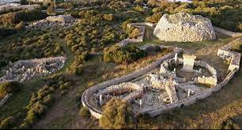

Poblat prehistòric l'origen del qual es remunta al període navetiforme (1700-1400 aC) del qual es conserven els fonaments d'una cabanya circular . Destaquen dos talaiots, el recinte de taula, una sala hipòstila, algunes coves excavades en el subsòl i altres restes constructives que conformaven els llocs d'habitatge.
En posició central s'eleva un gran talaiot, un dels millors de l'illa, i al costat d'ell, la taula, l'altre element públic del poblat. Voltant els monuments megalítics, apareix una muralla de planta estrellada construïda en el segle XVIII. Això es deu al fet que en aquest lloc va asseure els seus bateries el duc de Crillón durant el setge a la fortalesa de Sant Felip, en 1856. Una cosa més allunyada s'alça un segon talaiot de menor altura, amb diverses cases de planta circular

Editat per darrera vegada el